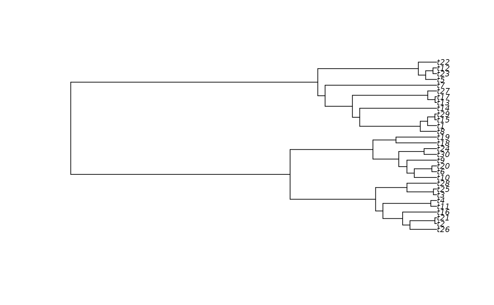

Simulated ultrametric phylogeny with 30 tips (t1 to t30) and a root age of 50, used in the examples and vignettes.
Generated with ape::rcoal() (seed 1234) and rescaled. Internal branches shorter than 1 (2% of the root age) were lengthened by moving
their rootward node towards the root, so that no node looks like a polytomy on a plot (the topology, the root age and the ultrametry are unchanged).
Usage
data(toy_backbone)See also
Other datasets from phylograftR:
phylograftR::toy_missing_taxa_listfor the list of missing taxa to graft on the backbone.phylograftR::toy_taxonomic_tablesfor the taxonomic tables of the backbone and of the missing taxa.phylograftR::toy_simmapfor the stochastic character map of colors.
Examples
# Import the phylogeny
data(toy_backbone)
# Plot the phylogeny
ape::plot.phylo(toy_backbone, cex = 0.7)
